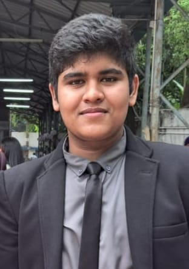
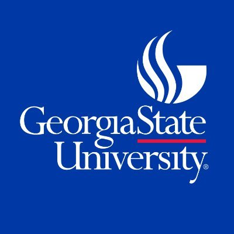

Vishal Venu Bangrae

LinkedIn
Github
Email Address - vbangrae1@student.gsu.edu, Location - Atlanta, GA,30303
I'm a dedicated Sophomore at Georgia State University's Honors College, embarking on a transformative academic journey, fueled by an insatiable passion for CS, I'm poised to explore the boundless possibilities of technology.
EDUCATION

Bachelors of Science in Computer Science
Georgia State University, Honors College | Atlanta, GA
GPA - 4.27, President's List, Expected Graduation - May 2027
SKILLS
Programming Languages and Skills:
Python, Java, C, Kotlin, XML, Arduino, Machine Learning, Deep Learning, Data Structures and Algorithms, Object Oriented
Programming, Functional Programming, Android App Development, Miniconda, Android Studio, Assembly Language(x86)
Frameworks and Libraries:
Pandas, Numpy, Pillow, Matplotlib, PyTorch, PyTorch Lightning, Scikit-learn, Selenium
RELEVANT COURSEWORK
Data Structures and Algorithms, System Level Programming, Computer Organization, Principles of Computer Science I and II,
Theoretical Foundations of Computer Science, Calc I&II, Probability and Statistics for Computer Science.
WORK EXPERIENCE
Undergraduate Research Assistant| Aug 2023 - Present
Math and Statistics Department at Georgia State University | Atlanta, GA
- Conducted comprehensive deep learning analysis on whole slide images from 64 Triple Negative Breast Cancer patients,
developing CNN models using Python and PyTorch, achieving approximately 90% accuracy in tumor microenvironment
detection and addressing racial mortality disparities
- Presented detailed findings on 'AI Based Microscopy Image Analysis for Breast Cancer” among 150 other researchers and
an audience over 500 at the Georgia State Undergraduate Conference, garnering significant interest and positive feedback
from academia and industry professionals.
Undergraduate Teaching Assistant|Aug 2023 - Present
UL MILE Lab at Georgia State University | Atlanta, GA
- Student Tutor at UL MILE Lab, providing academic support to over 100 students in a diverse environment, specializing in
College Algebra.
- Created an inclusive and engaging learning atmosphere using strong soft skills to enhance student experiences and promote
active participation.
PROJECTS
- Developed a web app for dyslexic individuals, using OCR and specialized fonts to convert handwritten text into a dyslexiafriendly format, improving readability.
- Technology: Azure Vision API for OCR, OpenDyslexia font, and Flask for the back end, enhancing accessibility for people
with dyslexia.
- Developed a secure program for password security analysis by checking the frequency of hacked SHA1 hashed passwords
from haveibeenpwned using a partial hash match (first 5 characters).
- This analysis is conducted locally on a personal computer without revealing the original password, thereby enhancing security.
HONORS AND AWARDS
ATL MARATHON
- Achieved a top 3 finish among 10,000 submissions in the ATL Marathon with the Utility Meter Reading App project.
- Earned an incubation opportunity with the Mahindra Group and presented the project at the 12th edition of the DIDAC
International Science Exhibition among 200+ exhibitors from over 34 countries
PRESIDENT'S LIST
- Earned President’s List recoginition by mainitaing a 4.0+ GPA at Georgia State University